新建\/编辑
- 打开LOV界面后，点击“新建”或者“编辑”，进入编辑界面：
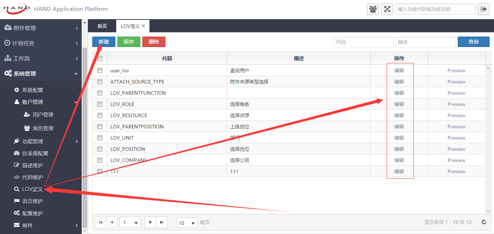
下图中各个表单元素的含义介绍：
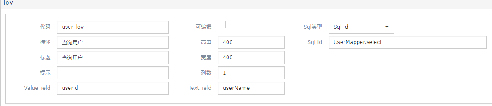
- 代码：Lov代码，对应LOV的ViewModel中的code字段；
- 描述：Lov描述，对应description字段；
- 标题：Lov弹出窗口的标题，对应title字段；
- 提示：Lov输入框的提示信息，对应placeholder字段；
- ValueField：值域，此处的字段名应该使用驼峰命名法；
- 可编辑：Lov输入框是否可以编辑，默认为否，对应ViewModel中的editableFlag字段（数据库中为EDITABLE）。当编辑状态为“否”时，则Lov的输入框不能进行输入，只能点击后面的查询按钮来进行相应操作；
- 高度：LOV弹出窗口的高度；
- 宽度：LOV弹出窗口的宽度；
- 列数：Lov弹出窗口中，查询字段输入框布局的列数。对应queryColumns字段，值应该大于0并小于等于4，其他值无效，大于4的默认为4，小于等于0的默认为1； 高度：LOV弹出窗口的高度；
- TextFiled：文本域，即Lov输入框最终显示的值所对应的字段，此处的字段名应该使用驼峰命名法；
- Sql类型：LOV用来查询数据的SQL语句的类型；分为Sql Id、自定义Sql和url三种类型；sqlId类型即**Mapper.xml文件中对应的sql操作的ID；自定义sql即自己定义的sql语句；url对应一个可以查询出数据的url，例如controller中的某个url路径。
- Sql Id/自定义Sql/URL：根据“Sql类型”的选择来判断此处的表单元素类型；
创建lov规范：
- 凡是需要使用到数据库中查出数据的字段名的地方，其字段名的命名方式应采用驼峰命名的方式，本页面中有三处地方使用到字段名：textField表单、valueFiled表单以及grid中的“字段名”；
- 使用自定义sql的方式来获取数据时，字段名与数据库中的相对应，sql语句的末尾不能加分号
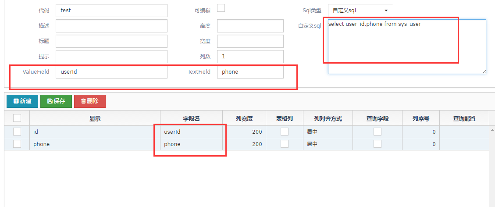
提示：当lov的可编辑被勾选后，则lov的input框允许输入数据，此时lov的input会生成成为autoComplete框，当有数据输入时，lov会根据输入的数据查询数据库中是否包含了输入字段的数据，如果有，则以下拉的列表的形式展示其中10条，此时可对数据进行选择；如果没有选择，那么此时input框中的数据有两种可能：该数据在数据库中存在或者不存在；当输入数据不存在于数据库中时，lov的value和text都会被设置为输入的数据。
例：
- 打开LOV_RESOURCE的可编辑，输入用户，lov会提示包含了‘用户’两字的前10条数据；
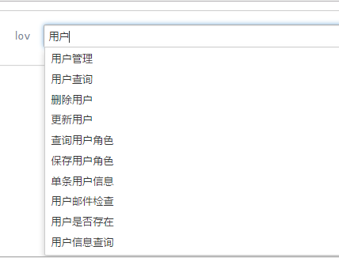
- 选择第三条"删除用户"，用控制台查看lov的value和text，分别是lov定义时的valueField的值和textFiled的值；
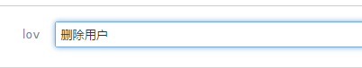
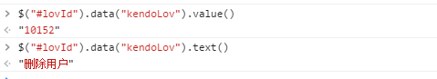
- 输入“删除”，不选择提示中的数据，数据库中此时没有这条数据；用控制台查看lov的value和text，它们的值都是输入的数据；
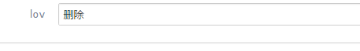
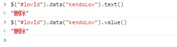
- 输入“删除岗位”，不进行选择，有一条提示，说明数据库中存在该条数据；用控制台查看value和text，分别是lov定义时的valueFiled和textFlied所对应的值；
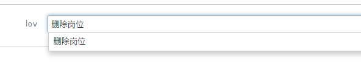
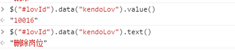
下图中各个表单元素含义介绍：
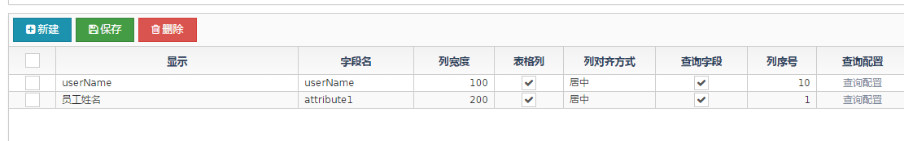显示：描述字段;
字段名：查询字段名；
- 列宽度：LOV弹出窗口里值列表中列的宽度
- 表格列：是否是LOV弹出窗口里值列表中的列
- 列对齐方式：：LOV弹出窗口里值列表中列的对齐方式
- 查询字段：是否是LOV弹出窗口里可进行查询的字段
- 列序号：LOV弹出窗口里值列表中列的排列序号
查询配置：
- 字段类型：查询字段的类型；
- 查询描述宽度：查询字段的label的宽度，基数为12，图中的值为3，则代表label占该行的3/12，即1/4；为0时代表使用系统默认的宽度，若已经设置需要取消,可将其值设为0；
- 查询字段宽度：查询字段的input框的宽度，基数为12，其值的意义与描述宽度相同；同一行中各个字段的描述宽度与字段宽度总和不得超过12，否则会换行或者超过部分无效。
- 查询字段序号：查询字段的排列序号
提示：当lov查询字段较多时可以配置查询列数及查询字段的描述宽度和字段宽度。
例：
将LOV_ROLE的查询列数设为‘2’；
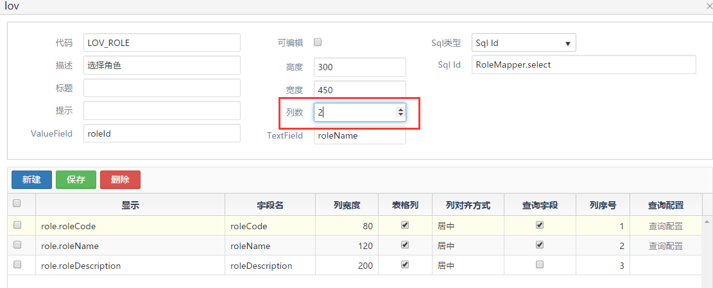第一个查询字段的宽度不进行设置（若已经设置需要取消,可将其值设为0）；那么roleCode字段的查询框样式为默认样式（默认样式的宽度随列数的变化而变化)；
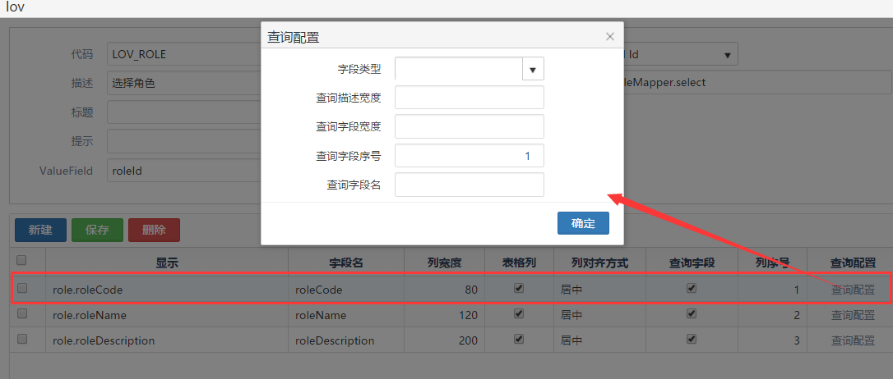
- 第二个查询字段的描述宽度设为3，input框宽度设为2，查询序号设为2；（因为此时lov的列数为2，如果第一列和第二列的描述宽度和字段宽度总和大于12（四个数字的总和），那么第二列会自动换行
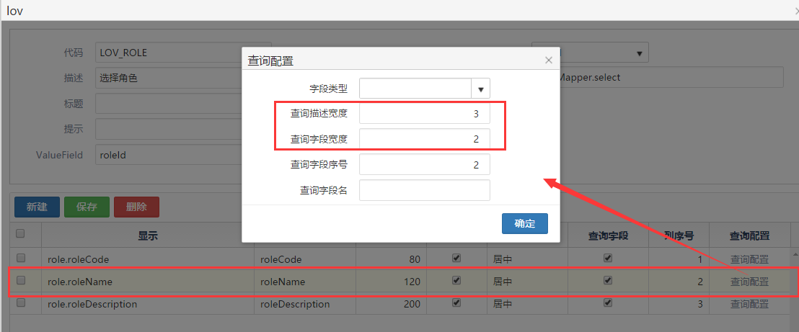
- 第三个查询字段的描述宽度设为3，input框宽度设为9（3+9=12；若此时input框宽度大于9，那么超过9的部分无效，即此时input的最大宽度为12-3=9）
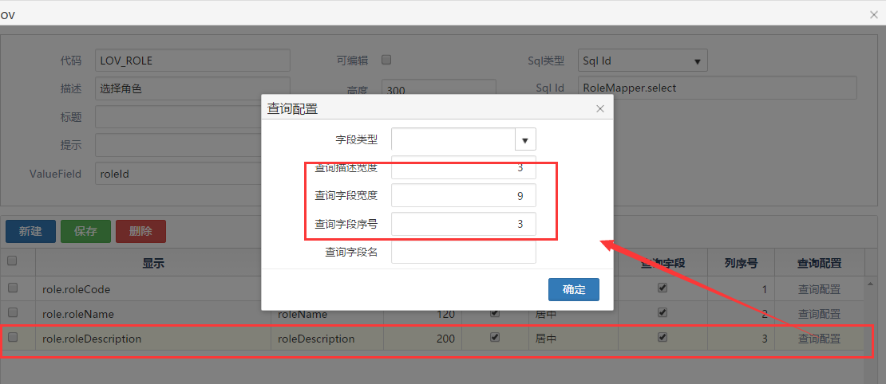
- 最终效果：
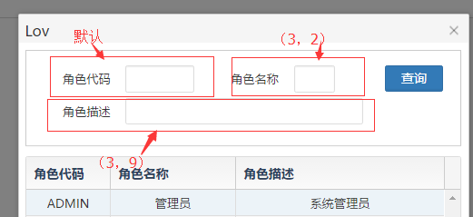
使用
基本使用：
lov分为静态和动态两种使用方式，其中动态使用方式可在生成LOV时，lovCode的值不确定的情况下使用。联动效果（选定lov的值后，viewModel中的其他字段也随之变化）和级联效果（根据提供的参数来查询lov显示的数据）将在静态生成的方式中演示。
- 静态生成及联动效果：
在下列代码中，${lovProvider.getLov(base.contextPath,base.locale, "LOV_ROLE")是必须的参数,LOV_ROLE为新建LOV时的‘“代码”栏，联动效果通过select事件实现；级联查询通过query事件实现：
<input id="lov" />
//被联动字段为userId，data-bind中value值绑定了user
<input type="text" name="userId" data-bind="enabled: isEnabled, value:data.userId">
<script>
$("#lov").kendoLov($.extend(${lovProvider.getLov(base.contextPath, base.locale, "LOV_ROLE")},
{
query: function(e) {
//在query事件中做级联查询，设置参数名为"roleName",值为"管理员",查询出的数据将会是所有角色名为“管理员”的数据
e.param['roleName'] ="管理员";
},
select: function(e) {
viewModel.data.set('productId', '1')
//在select事件中设置userId字段和roleCode字段的联动
viewModel.data.set('userId', e.item.roleCode)
}
}))
kendo.bind($('#lov'), viewModel);
</script>;
联动示例：
- userId初始值为3；
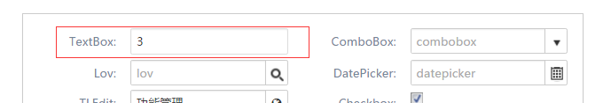
- 选择‘管理员’选项；
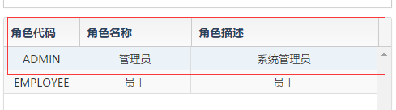
- userId的值变化成了管理员所在项对应的roleCode的值；
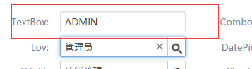
级联查询示例：
lovId为LOV_ROLE时的原始数据如下：
源码：
效果：
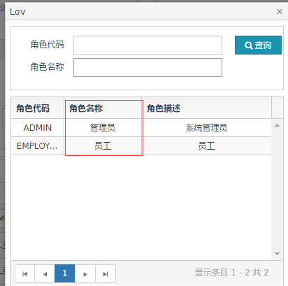假设根据需求我们只需要角色名称为“管理员”的数据，以下代码可以实现：
源码：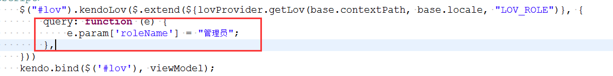
效果:
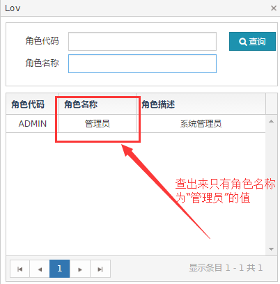

动态生成：
在form中生成：在决定lovCode值的DOM元素中添加change事件，调用lov的setLovCode()方法，该方法的参数为新的lovCode的值。
<div class="col-sm-4"><input id="typeofLOV" /></div> <div class="col-sm-4"><input id="dynamicLOV" /></div><script> $("#typeofLOV").kendoDropDownList({ dataSource:[{text:"LOV_ROLE",value:"LOV_ROLE"}, {text:"user_lov",value:"user_lov"}], dataTextField:"text", dataValueField:"value", change:function(){ //在change事件中调用lov中的setLovCode方法来传递lovCode的值 $("#dynamicLOV").data("kendoLov").setLovCode(this.value()); } }); $("#dynamicLOV").kendoLov({ //三个必要参数code、contextPath、locale code:$("#typeofLOV").val(), contextPath:'${base.contextPath}', locale:'${base.locale}', //其余参数可自行配置 select:function(e) { alert("select"); } }); </script>
例：
- 当动态LOV类型的值为LOV_ROLE时，打开动态LOV，是LOV_ROLE的数据；
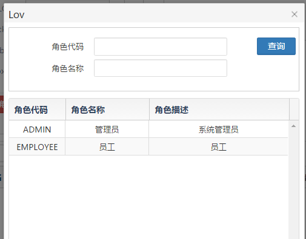
- 当动态LOV类型的值为user_lov时，打开lov的数据则是user_lov的数据
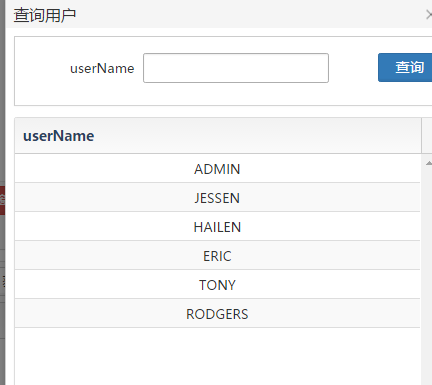
- 在grid中生成：
{
field:"lovResource",
title:"lov类型",
width:100,
editor : function (container, options) {
$('<input name="' + options.field + '"/>')
.appendTo(container)
.kendoDropDownList({
dataTextField : "text",
dataValueField: "value",
dataSource : dataSource3,
change:function(){
//在change事件中设置lovCode的值，并清空lov表单元素的值
options.model.set('lovType',this.value());
options.model.set("name",null);
options.model.set("lov",null)
}
});
}
},{
field: "lov",
title: 'lov',
width: 120,
template: function(dataItem) {
return dataItem['name'] || ''
},
editor: function(container, options) {
$('<input required name="' + options.field + '"/>')
.appendTo(container)
.kendoLov({
//三个必须参数：code、contextPath、locale，其他参数 根据实际情况自行设置
code:options.model.get("lovType"),
contextPath:'${base.contextPath}',
locale:'${base.locale}',
textField: 'name',
select: function(e) {
options.model.set('description', e.item.roleDescription);
},
model: options.model
});
}
}
基本事件：
select:选中事件，当选中LOV任意值时触发
select:function(e){//触发后执行的命令}query: 查询事件，进行LOV数据查询时触发
query:function(e){ alert('query') }change:改变事件，当LOV的input框的值发生变化时触发
change:function(e){ alert('change') }open:打开事件，打开LOV窗口的时候触发
open:function(e){alert('open') }close:关闭事件，关闭LOV窗口时触发
close:function(e){alert('close') }
其他参数
- dataTextField: 数据显示域
- dataValueField: 数据值域
- placeholder: 表单元素提示内容